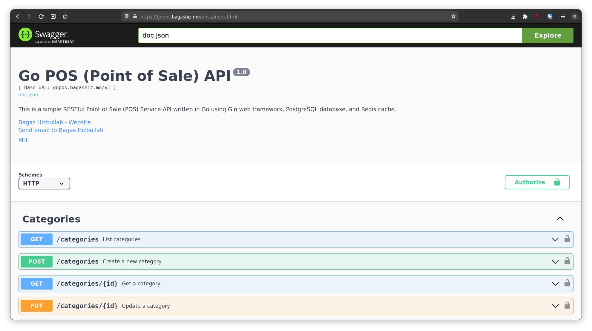
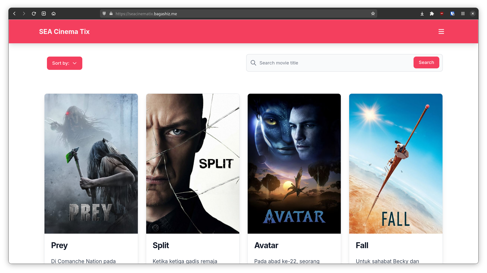

About
I am an Information Systems student at Brawijaya University. I specialize in web development, with a
specific focus on back-end development. I have practical experience working on back-end projects
using technologies such as Go, Node.js, and PHP with the Laravel web framework. Additionally, I have
acquired knowledge in Linux system administration and cloud computing through hands-on experience
with AWS, GCP, and other cloud providers.
Contacts
Projects
Most of my projects are related to back-end development, with a focus on RESTful web services and
APIs. Here are some of my projects:
Go POS

A simple RESTful Point of Sale (POS) web service written in Go programming language. This
project is a part of my learning process in understanding Hexagonal Architecture in Go.
It uses Gin as the HTTP framework and PostgreSQL as the database with pgx as the driver and
Squirrel as the query builder. It also utilizes Redis as the caching layer with go-redis as the
client.
This project idea was inspired by the Ide Project untuk Upgrade Portfolio Backend Engineer video
on YouTube by Asdita Prasetya, which provided valuable guidance and inspiration for its
development.
SEA Cinema Tix

This is a challenge project for the Compfest 15 Software Engineering Academy (SEA) program.
The SEA Cinema Tix is a movie ticket booking web application developed to enhance the moviegoing
experience for customers of SEA Cinema.
Built with Laravel 10 Framework, TailwindCSS, and powered by a MySQL database, this application
provides a seamless and efficient platform for users to browse movies, book tickets, and manage
their reservations.